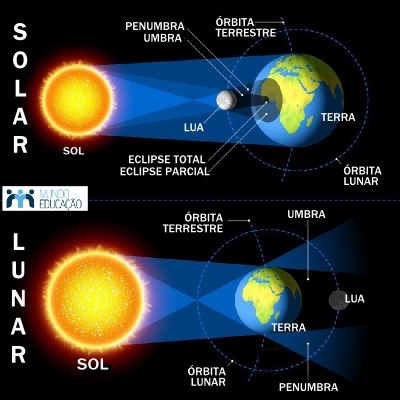

Cuando el sol, la tierra y la luna se alinean en ese orden exacto, ocurre un eclipse lunar. El eclipse lunar se produce cuando la luna se encuentra en la umbra y penumbra de la sombra de la Tierra, aquí tenemos la luna completamente ennegrecida, sin poder verla durante unas horas.
